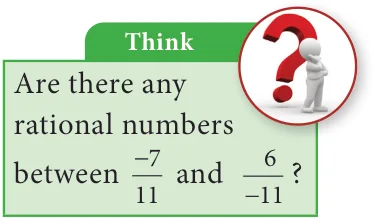

<!DOCTYPE html>
<html lang="en">
<head>
<meta charset="UTF-8">
<meta name="viewport" content="width=device-width,initial-scale=1">
<title>1.2 Rational Numbers — Numbers</title>
<meta name="description" content="Class 8 Mathematics · Numbers · 1.2 Rational Numbers">
<link rel="icon" href="data:image/svg+xml,<svg xmlns='http://www.w3.org/2000/svg' viewBox='0 0 100 100'><text y='.9em' font-size='90'>📘</text></svg>">
<link rel="stylesheet" href="../../../assets/book.css">
<link rel="stylesheet" href="https://cdn.jsdelivr.net/npm/katex@0.16.11/dist/katex.min.css" crossorigin="anonymous">
</head>
<body>
<header class="topbar">
<div class="topbar-in">
  <div class="crumb">
    <span class="c1"><a href="../../../index.html">Library</a> · <a href="../../index.html">Class 8 Mathematics</a></span>
    <span class="c2">Numbers · 1.2 Rational Numbers</span>
  </div>
  <a class="tb-btn" data-nav="prev" href="../../01-numbers/01-chapter-opener/index.html" title="Chapter opener; 1.1 Introduction">←</a>
  <details class="drawer"><summary class="tb-btn" title="Sections in this chapter">☰</summary>
<div class="drawer-panel"><div class="dh">Numbers</div><a href="../01-chapter-opener/index.html">Chapter opener; 1.1 Introduction</a><a href="../02-rational-numbers-1.2/index.html" aria-current="page">1.2 Rational Numbers</a><a href="../03-exercise-1.1/index.html">Exercise 1.1</a><a href="../04-basic-arithmetic-operations-on-rational-numbers-1.3/index.html">1.3 Basic Arithmetic Operations on Rational Numbers</a><a href="../05-word-problems-on-the-basic-operations-1.4/index.html">1.4 Word Problems on the basic operations</a><a href="../06-exercise-1.2/index.html">Exercise 1.2</a><a href="../07-properties-of-rational-numbers-1.5/index.html">1.5 Properties of Rational Numbers</a><a href="../08-exercise-1.3/index.html">Exercise 1.3</a><a href="../09-introduction-to-square-numbers-1.6/index.html">1.6 Introduction to Square Numbers</a><a href="../10-square-root-1.7/index.html">1.7 Square Root</a><a href="../11-exercise-1.4/index.html">Exercise 1.4</a><a href="../12-cubes-and-cube-roots-1.8/index.html">1.8 Cubes and Cube Roots</a><a href="../13-exercise-1.5/index.html">Exercise 1.5</a><a href="../14-exponents-and-powers-1.9/index.html">1.9 Exponents and Powers</a><a href="../15-exercise-1.6/index.html">Exercise 1.6</a><a href="../16-exercise-1.7/index.html">Exercise 1.7</a><a href="../17-summary/index.html">SUMMARY</a></div></details>
  <a class="tb-btn" data-nav="next" href="../../01-numbers/03-exercise-1.1/index.html" title="Exercise 1.1">→</a>
  <button class="tb-btn" data-theme-toggle title="Toggle light / dark" aria-label="Toggle light or dark theme">◐</button>
</div>
<div class="progress"><span style="width:1.9%"></span></div>
</header>
<main class="wrap">
<div class="sec-head">
  <p class="eyebrow"><a href="../index.html">Chapter 1 · Numbers</a></p>
  <h1>1.2 Rational Numbers</h1>
  <p class="sec-meta">Textbook pages 2–12 · 6 figures</p>
</div>
<article class="prose">
<p>Even after coining integers, one could not relax! 10¸5 is no doubt fine, giving the answer 2 but is 8¸5 comfortable? Numbers between numbers are needed. 8¸5 seen as 1.6, is a number between 1 and 2. But, where does ( - 3)¸4 lie? Between 0 and \(- 1\). Similarly, where do you find</p>
<p>\(\frac{-12}{5}\) on the number line? Between \(- 2\) and \(- 3\). Thus, a ratio made by dividing an integer by another integer is called a rational number. (Remember, we should not divide by zero!) Formally speaking, a rational number is a number of the fractional (ratio) form \(\frac{a}{b}\) , where a and b are integers and \(b \ne 0\). The collection of all rational numbers is denoted by . Non-negative rational numbers may be thought of as fractions. They can also be expressed as decimals and percents. Since operations on rational numbers demand a basic knowledge of operations on fractions, let us recall through an exercise some of the basic ideas related to fractions.</p>
<p>Recap Exercise</p>
<ul class="qlist">
<li><span class="mk">1.</span><span class="lt">The simplest form of \(\frac{125}{200}\) is _________.</span></li>
<li><span class="mk">2.</span><span class="lt">Which of the following is not an equivalent fraction of 12 8 ?</span></li>
<li><span class="mk">(A)</span><span class="lt">\(\frac{2}{3}\) (B) \(\frac{16}{24}\) (C) \(\frac{32}{60}\) (D) \(\frac{24}{36}\)</span></li>
<li><span class="mk">3.</span><span class="lt">Which is bigger: \(\frac{4}{5}\) or 89 ? 4. Add the fractions: \(\frac{357}{5810} + +\)</span></li>
<li><span class="mk">5.</span><span class="lt">Simplify: \(\frac{1}{8} -\) 1 \(6 -\) 14 6. Multiply: \(2 \frac{3}{5}\) and 147 .</span></li>
<li><span class="mk">7.</span><span class="lt">Divide: by 35 . 8. Fill in the boxes: \(= 70 = 28 = = 7\)</span></li>
</ul>
<p>\(\frac{7}{36} 81 \frac{}{66}\)  \(44 \frac{}{121}\) </p>
<ul class="qlist">
<li><span class="mk">9.</span><span class="lt">In a city \(\frac{7}{20}\) of the population are women and 14 are children. Find the fraction of the</span></li>
</ul>
<p>population of men.</p>
<ul class="qlist">
<li><span class="mk">10.</span><span class="lt">Represent \(\frac{11}{24}\)  by a diagram.</span></li>
</ul>
<h4 class="callout-h" id="s-try-these">Try these</h4>
<ul class="qlist">
<li><span class="mk">1.</span><span class="lt">Is the number \(- 7 a\) rational number? Why?</span></li>
<li><span class="mk">2.</span><span class="lt">Write any 6 rational numbers between 0 and 1.</span></li>
</ul>
<h4 class="callout-h" id="s-note">Note</h4>
<p>The word ‘ratio’ in Math refers to the comparison of the sizes of two different quantities of any kind. For example, if there is one teacher for every 20 students in a class, then the ratio of teachers to students is 1:20. Ratios are often written as fractions and so 1:20numbers. \(= \frac{1}{20}\) . For this reason, numbers in the Fractional form are called rational</p>
<h3 id="s-1-2-1-rational-numbers-on-a-number-line">1.2.1 Rational numbers on a number line</h3>
<p>Locating the rational numbers on a number line is an important skill. For example, to represent the number \(\frac{ - 3}{4}\) on the number line, \(\frac{ - 3}{4}\) being negative would be marked to the left of 0 and it is between 0 and \(- 1\). We know that the integers, 1 and \(- 1\) are equidistant from 0 and so are the numbers 2 and \(- 2\), 3 and \(- 3\) from 0. This concept remains the same for rational numbers too. Now, as we mark \(\frac{3}{4}\) to the right of zero, at 3 parts out of 4 between 0 and 1, the same way, we will mark \(\frac{ - 3}{4}\) to the left of zero, at 3 parts out of 4 between 0 and \(- 1\) as shown below. \(\frac{-3}{2} \frac{ - 3}{4} \frac{3}{4}\)</p>
<p>\(- 2 - 1 0 1 2\)</p>
<p class="caption">Fig. 1.5</p>
<p>Similarly, it is easy to find \(\frac{-3}{2}\) between \(- 1\) and \(- 2\) since 23 112 . Now, on the following number line what rational numbers do the letters A and B represent?</p>
<p>\(- 6 - 5 - 4 - 3 - 2 - 1 0 1 2 3 4\)</p>
<p class="caption">Fig. 1.6</p>
<p>You will now be able to say easily the rational numbers marked by A and B on the number line as shown above. Isn’t it? Here, A represents the rational number \(- 4 \frac{4 -\) 32}{77}   and B represents the rational number \(3 \frac{318}{55}\)   .</p>
<h3 id="s-1-2-2-decimal-representation-of-a-rational-number">1.2.2 Decimal representation of a rational number</h3>
<p>A rational number can also be represented in decimal form rather than in the usual fractional form. Given a rational number in the form \(\frac{a}{b}\) (b \(\ne 0)\), just divide the numerator a by the denominator b and we can see that it can be expressed as a terminating or non- terminating, recurring decimal.</p>
<h4 class="callout-h" id="s-activity">Activity</h4>
<p>Use a string as a number line and fix it on the wall, for the length of the class room. Just mark the integers spaciously and ask the students to pick the rational number cards from a box and fix it roughly at the right place on the number line string. This can be played between teams and the team which fixes more number of cards correctly (by marking) will be the winner.</p>
<h4 class="callout-h" id="s-example-1-1">Example 1.1</h4>
<p>Write the decimal forms of the following rational numbers:</p>
<ul class="qlist">
<li><span class="mk">i)</span><span class="lt">\(\frac{1}{4}\) ii) \(1 \frac{3}{20}\) iii) \(-5 \frac{4}{5}\) iv) 3 v) \(\frac{1}{3}\)</span></li>
</ul>
<h4 class="callout-h" id="s-solution">Solution:</h4>
<ul class="qlist">
<li><span class="mk">(i)</span><span class="lt">\(\frac{125}{4100} = = 0 25\). (ii) \(1 \frac{323115}{2020100} = = =1 15\). (iii) \(- 5 \frac{4 - 29 - 58}{5510} = = = - 5 8\).</span></li>
</ul>
<div class="mathblock"><p>\(\frac{330}{110} \frac{1}{3}\)</p></div>
<ul class="qlist">
<li><span class="mk">(iv)</span><span class="lt">\(3= = =3 0\). (v) \(= 0.3333\)... (by actual division and it is recurring and non-terminating)</span></li>
</ul>
<h4 class="callout-h" id="s-note">Note</h4>
<p>™ The above examples show how a rational number may be given in decimal form. The reverse process of converting the decimal form of a rational number to the fractional form may be seen in the higher classes. ™ There are decimal numbers which are non-terminating and non-recurring such as</p>
<div class="mathblock"><p>= 3.141592653589793238462643….. 𝜋2 = 1.41421356237309504880168……. etc.</p></div>
<p>They are not rational numbers and one can study more about them in the higher classes.</p>
<h4 class="callout-h" id="s-try-these">Try these</h4>
<p>Write the decimal forms of the following rational numbers:</p>
<ul class="qlist">
<li><span class="mk">1.</span><span class="lt">\(\frac{4}{5} 2\). \(\frac{6}{25} 3\). \(\frac{486}{1000} 4\). \(\frac{1}{9} 5\). \(3 \frac{1}{4} 6\). \(- 2 \frac{3}{5}\)</span></li>
</ul>
<h3 id="s-1-2-3-positive-and-negative-rational-numbers">1.2.3 Positive and Negative rational numbers</h3>
<p>Rational numbers may be classified as positive and negative rational numbers. If both the numerator and the denominator of the fraction representing a rational number are of the same sign, then the rational number is positive. For example, numbers like \(\frac{3}{4}\) , \(\frac{-11}{-6}\) etc., are positive rational numbers. If either the numerator or the denominator of the fraction representing a rational number is negative, then the rational number is negative. For example, numbers like \(\frac{-311}{4-6}\) , etc., are negative rational numbers.</p>
<figure class="fig wide"></figure>
<h3 id="s-1-2-4-equivalent-rational-numbers">1.2.4 Equivalent rational numbers</h3>
<p>We know how to write equivalent fractions when a fraction is given. Since a rational number can be represented by a fraction, we can think of equivalent rational numbers, duly obtained through equivalent fractions.</p>
<p>Suppose a rational number is in fractional form. Multiply its numerator and denominator by the same non-zero integer to obtain a rational number which is equivalent to it. For example,</p>
<figure class="fig wide"></figure>
<p>Thus, -</p>
<h3 id="s-1-2-5-rational-numbers-in-standard-form">1.2.5 Rational numbers in Standard form</h3>
<p>\(4 - - -\) Observe the following rational numbers: , , , , . Here, we see that</p>
<ul class="qlist">
<li><span class="mk">i)</span><span class="lt">the denominators of these rational numbers are all positive integers</span></li>
<li><span class="mk">ii)</span><span class="lt">1 is the only common factor between the numerator and the denominator of each</span></li>
</ul>
<p>of them and</p>
<ul class="qlist">
<li><span class="mk">iii)</span><span class="lt">the negative sign occurs only in the numerator.</span></li>
</ul>
<p>Such rational numbers are said to be in standard form. A rational number is said to be in standard form, if its denominator is a positive integer and both the numerator and denominator have no common factor other than 1. If a rational number is not in the standard form, then it can be simplified to arrive at the standard form.</p>
<p>The collection of rational numbers is denoted by the letter 2020</p>
<aside class="sidenote"><p>Interest Rates</p><p>Bank</p></aside>
<p>because it is formed by considering all quotients, except General</p>
<p>those involving division by 0. Decimal numbers can be put in</p>
<aside class="sidenote"><p>Category</p></aside>
<p>quotient form and hence they are also rational numbers.</p>
<aside class="sidenote"><p>Senior Citizens</p></aside>
<h4 class="callout-h" id="s-example-1-2">Example 1.2</h4>
<p>Reduce to the standard form: (i) \(\frac{48}{ - 84}\) (ii) \(\frac{ - 18}{ - 42}\)</p>
<h4 class="callout-h" id="s-solution">Solution:</h4>
<ul class="qlist">
<li><span class="mk">(i)</span><span class="lt">Method 1:</span></li>
</ul>
<p>48 48 2 24 2 12 3 4 (dividing by \(- 2,2\) and 3 successively) 84 84 2 42 2 21 3 7</p>
<p>Method 2:</p>
<p>The HCF of 48 and 84 is 12 (Find it!). Thus, we can get its standard form by dividing it by \(- 12\).</p>
<p>48 48 12 4 84 84 ( 12) 7</p>
<ul class="qlist">
<li><span class="mk">(ii)</span><span class="lt">Method 1:</span></li>
</ul>
<p>\(- 18 = - 18 \div\) ( \(- 2) = 9 \div 3 = 3\) (dividing by \(- 2\) and 3 successively)</p>
<div class="mathblock"><p>\(- 42 - 42 \div\) ( \(- 2) 21 \div 3 7\)</p></div>
<p>Method 2:</p>
<p>The HCF of 18 and 42 is 6 (Find it!). Thus, we can get its standard form by dividing it by 6.</p>
<div class="mathblock"><p>\(- 18 = - 18 \times\) ( \(- 1) = 18 = 18 \div 6 = 3 - 42 - 42 \times\) ( \(- 1) 42 42 \div 6 7\)</p></div>
<h4 class="callout-h" id="s-try-these">Try these</h4>
<ul class="qlist">
<li><span class="mk">1.</span><span class="lt">Which of the following pairs represents equivalent rational numbers?</span></li>
<li><span class="mk">(i)</span><span class="lt">\(\frac{ - 618}{4 - 12}\) , (ii) \(\frac{ - 41}{ - 20 - 5}\) , (iii) \(\frac{ - 1260}{ - 1785}\) ,</span></li>
<li><span class="mk">2.</span><span class="lt">Find the standard form of:</span></li>
<li><span class="mk">(i)</span><span class="lt">\(\frac{36}{ - 96}\) (ii) \(\frac{ - 56}{ - 72}\) (iii) \(\frac{27}{18}\)</span></li>
<li><span class="mk">3.</span><span class="lt">Mark the following rational numbers on a number line.</span></li>
<li><span class="mk">(i)</span><span class="lt">\(\frac{ - 2}{3}\) (ii) \(\frac{ - 8}{ - 5}\) (iii) \(\frac{5}{ - 4}\)</span></li>
</ul>
<h3 id="s-1-2-6-comparison-of-rational-numbers">1.2.6 Comparison of rational numbers</h3>
<p>It is useful to remember the following points: ™ Every positive number is greater than zero. ™ Every negative number is smaller than zero. ™ Every positive number is greater than every negative number. ™ Every number on the right of a number on a number line is greater than that number.</p>
<p>When two integers or fractions are given, we know how to compare them and say which is greater or smaller. Now, in the same way, we can compare a pair of rational numbers.</p>
<p>Type 1 : Comparing two rational numbers with opposite signs Example 1.3</p>
<p>Compare and -10 .</p>
<div class="mathblock"><p>\(\frac{5}{17} 19\)</p></div>
<h4 class="callout-h" id="s-solution">Solution:</h4>
<p>Since every positive number is greater than every negative number, we conclude that \(\frac{5}{17} &gt; -1019\) .</p>
<p>Type 2 : Comparing two rational numbers represented by two fractions with same denominators</p>
<h4 class="callout-h" id="s-example-1-4">Example 1.4</h4>
<p>Compare \(\frac{1}{3}\) and \(\frac{4}{3}\) .</p>
<h4 class="callout-h" id="s-solution">Solution:</h4>
<p>Since the denominators are the same, just compare the numerators. Since \(1 &lt; 4\), we conclude that \(\frac{1}{3} &lt; \frac{4}{3}\) .</p>
<p>Type 3 : Comparing two rational numbers represented by two fractions with different denominators</p>
<h4 class="callout-h" id="s-example-1-5">Example 1.5</h4>
<p>Compare \(\frac{3}{4}\) and \(\frac{5}{6}\) .</p>
<h4 class="callout-h" id="s-solution">Solution:</h4>
<p>The LCM of the denominators is 12 (Find it!). Consider for each rational number an equivalent rational number with the LCM 12 as denominator. We get \(\frac{3}{4} = \frac{9}{12}\) and \(\frac{5}{6} = \frac{10}{12}\) , which become like fractions now. Here, \(\frac{9}{12} &lt; \frac{10}{12}\) . Hence, we conclude that \(\frac{3}{4} &lt; \frac{5}{6}\) .</p>
<p>Type 4 : Comparing two rational numbers that are not in standard form Example 1.6</p>
<p>Compare \(\frac{9}{-4}\) and \(\frac{-2}{3}\) .</p>
<h4 class="callout-h" id="s-solution">Solution:</h4>
<p>The number \(\frac{9}{-4}\) is not in standard form. First put it in the standard form.</p>
<p>\(9 = 9 \times - 1(to\) get a positive denominator) \(= - 9\)</p>
<p>\(- 4 - 4 - 1 4\) Now, we shall compare the fractions \(\frac{-9}{4}\) and \(\frac{-2}{3}\) . We find that these two fractions are unlike fractions. To make them as like fractions, we make use of their LCM, which is 12. We can now compare their equivalent fractions \(\frac{-9}{4} = \frac{-27}{12}\) and \(\frac{-2}{3} = \frac{-8}{12}\) (How?). We find that the denominators are the same and so just comparing the numerators \(- 27\) and \(- 8\) are enough.</p>
<p>Visualizing these numbers on the number line, we see that</p>
<p>\(- 28 - 27 - 26 - 22 - 21 - 20 - 19 - 18 - 10 - 9 - 8 - 7\)</p>
<p class="caption">Fig. 1.7</p>
<p>\(- 8\) is to the right of \(- 27\) and hence ( \(- 8) &gt;\) ( \(- 27)\). This leads to the result that consequently we conclude that \(&gt; 9\) . \(\frac{-8}{12} &gt; \frac{-27}{12}\) and</p>
<div class="mathblock"><p>\(\frac{-2}{3} 4-\)</p></div>
<h4 class="callout-h" id="s-example-1-7">Example 1.7</h4>
<p>Write the following rational numbers in ascending and descending order. \(- 3\), 7 , \(- 15\), 14 , \(- 8 5 - 10 20 - 30 15\)</p>
<h4 class="callout-h" id="s-solution">Solution:</h4>
<p>First make the denominators to be positive and write the numbers in standard form as \(- 3\), \(- 7\) , \(- 15\), \(- 14\) , \(- 8\) . Here, the LCM of 5,10,15,20 and 30 is 60 (Find it!). Change the 5 10 20 30 15 given rational numbers in equivalent form with common denominator 60. \(\frac{ - 3}{5} \frac{-7}{10} \frac{ - 15}{20} \frac{ - 14}{30} \frac{ - 8}{15}\)</p>
<div class="mathblock"><p>\(= \frac{312}{512} = 107 66 = 1520 33 = 1430 22 = 158 44 = \frac{ - 36}{60} = 6042 = 6045 = 6028 = 3260\)</p></div>
<p>Comparing the numerators alone, that is, \(- 36\), \(- 42\), \(- 45\), \(- 28\) and \(- 32\) we see that</p>
<div class="mathblock"><p>\(- 45 &lt; - 42 &lt; - 36 &lt; - 32 &lt; - 28\)</p></div>
<p>Hence, 45 42 36 32 28 and so, 15 7 3 8 14 . 60 60 60 60 60 20 10 5 15 30 So, the ascending order is \(- 15\), 7 , \(- 3\), \(- 8\) and 14 . \(20 - 10 5 15 - 30\) Also, its reverse order gives the descending order as 14 , \(- 8\) , \(- 3\), 7 and \(- 15\) . \(- 30 15 5 - 10 20\)</p>
<h3 id="s-1-2-7-rational-numbers-between-any-two-given-rational-numb">1.2.7 Rational numbers between any two given rational numbers</h3>
<p>Consider the integers 4 and 10. We can locate five integers namely 5,6,7,8 and 9 (shown in dark dots) between them. Isn’t it?</p>
<p class="caption">Fig. 1.8</p>
<p>How many integers can you find between 3 and \(- 2\)? List them. Are there any integers between \(- 5\) and \(- 4\)? No, is the answer.</p>
<p>-5 -4 -3 -2 -1 0 1 2 3</p>
<p class="caption">Fig. 1.9</p>
<p>This shows that the choice of integers between two given integers is limited. They are finite in number or may be nothing between them. Let us think what will happen, if we consider rational numbers instead of integers? We will see that we can have many rational numbers between any two rational numbers. There are at least two methods to find more rational numbers between any two rational numbers.</p>
<p>Method of Averages:</p>
<p>We know that is the average of any two numbers always lies at the middle of them. For example, the average of 2 and 8 is shown in the following number line. \(\frac{2+8}{2} =5\) and this 5 lies at the middle of 2 and 8 as average</p>
<p class="caption">Fig. 1.10</p>
<p>We use this idea to find more rational numbers between any two rational numbers.</p>
<h4 class="callout-h" id="s-example-1-8">Example 1.8</h4>
<div class="mathblock"><p>\(\frac{15}{39}\)</p></div>
<p>Find a rational number between and .</p>
<p>Solution: The average of 1and =  + =  \(\times +\)  (Why?)</p>
<figure class="fig"></figure>
<div class="mathblock"><p> \(\frac{5184}{9299}\)</p></div>
<figure class="fig"><figcaption>Fig. 1.11</figcaption></figure>
<p>\(\frac{0}{9} \frac{1}{9} \frac{2}{9} \frac{6}{9} \frac{7}{9} \frac{8}{9} \frac{9}{9}\)</p>
<p>Note that \(\frac{4}{9}\) is one rational number we have found in between \(\frac{15}{39}\) and and we can find many such numbers in between \(\frac{15}{39}\) and . This shows that between any two rational numbers there lie an unlimited number of rational numbers! Mathematically, we say that there lie an infinite number of rational numbers between any two rational numbers.</p>
<figure class="fig side-fig"></figure>
<p>Method of Equivalent rational numbers:</p>
<p>We can use the idea of equivalent fractions to get more rational numbers between any two rational numbers. This is clearly explained in the following illustration.</p>
<p>Illustration:</p>
<p>Let us now try to find more rational numbers say between \(\frac{3}{7}\) and 47 by the following visual explanation on the number line. If we get the multiples of the denominator of the equivalent rational numbers (the easy one will be to multiply by 10), then we can insert as many rational numbers as we want. We shall write \(\frac{3}{7}\) as 3070 and 47 as 4070 and see that there are 9 rational numbers between \(\frac{3}{7}\) and 47 as given in the number line below.</p>
<p>\(\frac{330}{770} \frac{31}{70} \frac{32}{70} \frac{33}{70} \frac{34}{70} \frac{35}{70} \frac{36}{70} \frac{37}{70} \frac{38}{70} \frac{39}{70} \frac{404}{707}\)</p>
<p>\(= =\)</p>
<p class="caption">Fig. 1.12</p>
<p>Now, if we want more rational numbers between say and we can write as \(\frac{37}{70} \frac{38}{70} \frac{37}{70} \frac{370}{700}\)</p>
<p>and as . Then again, we will get nine rational numbers between and as \(\frac{38}{70} \frac{380}{700} \frac{37}{70} \frac{38}{70} 371\), 372 , 373, 374 , 375, 376 , 377 , 378 and .</p>
<div class="mathblock"><p>\(700 700 700 700 700 700 700 700 \frac{379}{700}\)</p></div>
<p>The following diagram helps us to understand this nicely with a magnifying lens used between 0 and 1 and further zoomed into the fractional parts also.</p>
<p>. \(- 2 - 1 0 1 2\)</p>
<p>\(\frac{0}{7} \frac{1}{7} \frac{2}{7} \frac{3}{7} \frac{4}{7} \frac{5}{7} \frac{6}{7} \frac{7}{7}\)</p>
<div class="mathblock"><p>\(0 = =1\)</p></div>
<p>\(\frac{330}{770} \frac{31}{70} \frac{32}{70} \frac{33}{70} \frac{34}{70} \frac{35}{70} \frac{36}{70} \frac{37}{70} \frac{38}{70} \frac{39}{70} \frac{404}{707}\)</p>
<p>\(= =\)</p>
<p>\(\frac{37370}{70700} \frac{371}{700} \frac{372}{700} \frac{373}{700} \frac{374}{700} \frac{375}{700} \frac{376}{700} \frac{377}{700} \frac{378}{700} \frac{379}{700} \frac{38038}{70070}\)</p>
<p>\(= =\)</p>
<p class="caption">Fig. 1.13</p>
<p>Thus, we can see that there are an unlimited number of rational numbers between any two given rational numbers.</p>
<h4 class="callout-h" id="s-example-1-9">Example 1.9</h4>
<p>Find atleast two rational numbers between \(\frac{-3-2}{45}\) and .</p>
<h4 class="callout-h" id="s-solution">Solution:</h4>
<p>The denominators are different for the given rational numbers. The LCM of the denominators 4 and 5 is 20. Make the rational numbers such that they have common denominators as 20. Here,</p>
<div class="mathblock"><p>\(- 3= - \times 3 5 = - 15\) and \(- 2 = - \times 2 4 = - 8\) .</p></div>
<p>It is easy now to find and insert rational numbers between \(\frac{-15}{20}\) and \(\frac{-8}{20}\) as shown below. -3 -2 4 5</p>
<p>-15 -14 -13 -12 -11 -10 -9 -8 20 20 20 20 20 20 20 20</p>
<p class="caption">Fig. 1.14</p>
<p>We can list a few rational numbers as -14 , -13, -12 , -11, -10 and -9 between \(20 20 20 20 20 20 \frac{-15}{20}\) and \(\frac{-8}{20}\) . Are these the only rational numbers between rational numbers between them, if possible! \(\frac{-15}{20}\) and \(\frac{-8}{20}\) ? Think! Try to find 10 more</p>
<h4 class="callout-h" id="s-note">Note</h4>
<p>We can find many rational numbers between \(\frac{- 7}{11}\) and \(\frac{5}{-9}\) quickly as given below: The range of rational numbers can be got by the cross multiplication of denominators with the numerators after writing the given fractions in standard form. The cross multiplication here \(\frac{- 7}{11} \frac{-5}{9}\) gives the range of rational numbers from \(- 63\) to \(- 55\) with the denominator 99. This is nothing but making the given rational numbers equivalent with the denominator 99!</p>
</article>
<nav class="pager"><a class="" data-nav="prev" href="../../01-numbers/01-chapter-opener/index.html"><span class="dir">← Previous</span><span class="t">Chapter opener; 1.1 Introduction</span><span class="ch">Numbers</span></a><a class="nx" data-nav="next" href="../../01-numbers/03-exercise-1.1/index.html"><span class="dir">Next →</span><span class="t">Exercise 1.1</span><span class="ch">Numbers</span></a></nav>
</main><footer class="site">Generated from the source textbook PDFs · text, figures and exercises belong to their respective publishers.</footer><script defer src="https://cdn.jsdelivr.net/npm/katex@0.16.11/dist/katex.min.js" crossorigin="anonymous"></script>
<script defer src="https://cdn.jsdelivr.net/npm/katex@0.16.11/dist/contrib/auto-render.min.js" crossorigin="anonymous"
  onload="renderMathInElement(document.body,{delimiters:[
    {left:'\\(',right:'\\)',display:false},
    {left:'$$',right:'$$',display:true},
    {left:'\\[',right:'\\]',display:true}],throwOnError:false,ignoredTags:['script','noscript','style','textarea','pre','code']})"></script>
<script src="../../../assets/book.js"></script>
<script defer src="../../../../assets/search.js?v=1789782769"></script>
<script defer src="../../../../assets/screenshot.js?v=2"></script>
</body>
</html>
